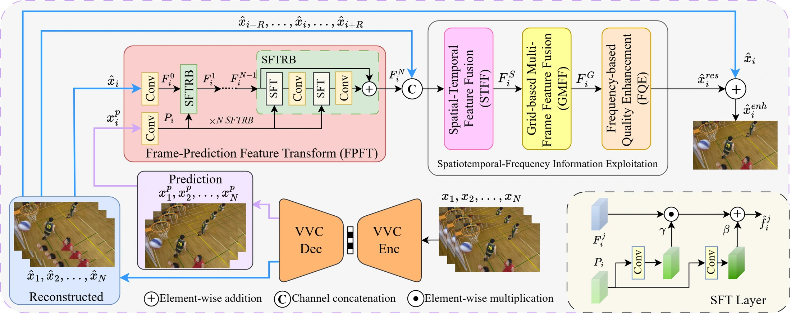
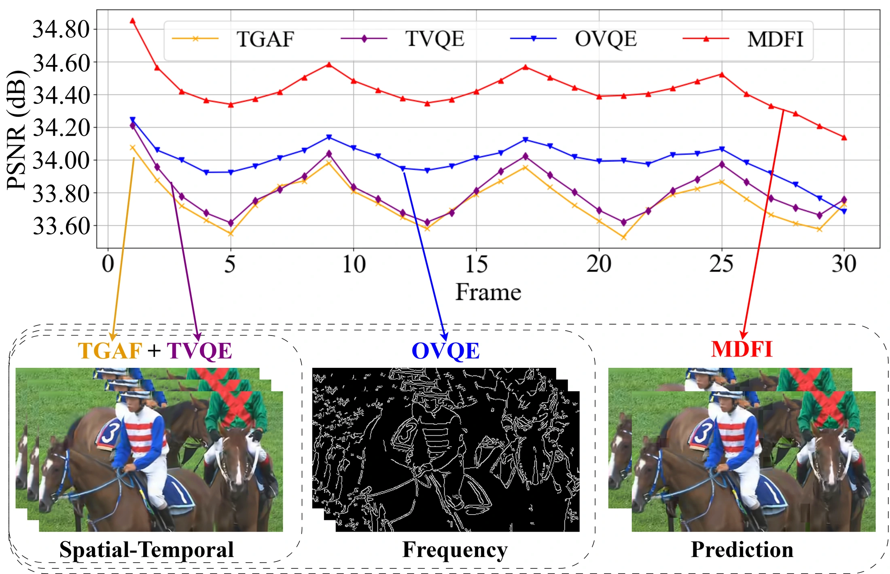
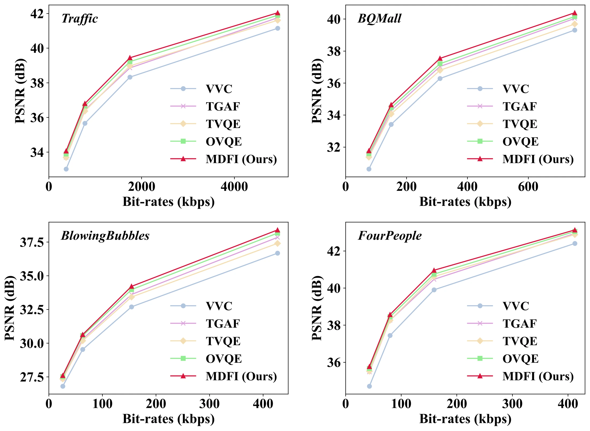
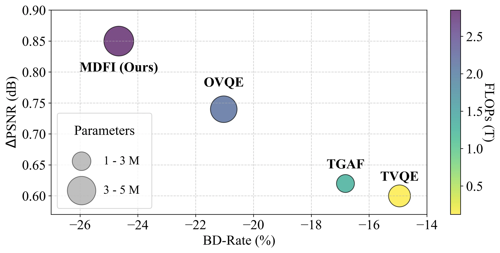

Prediction-aware enhancement
The FPFT module transforms compressed-domain prediction information into features for video restoration.
MDFI: A Multi-Domain Features Integration for Compressed Video Quality Enhancement
IEEE Transactions on Consumer Electronics · 2026
1 Department of Computer Science, National Yang Ming Chiao Tung University, Taiwan
2 Faculty of Electronics and Telecommunications, VNU University of Engineering and Technology, Vietnam
* Corresponding author: Xiem HoangVan.
Combining prediction signals, temporal context, and frequency information for VVC video enhancement.
MDFI enhances H.266/VVC compressed video by integrating prediction information from the bitstream with spatiotemporal and frequency-domain features. A Frame-Prediction Feature Transform (FPFT) module processes prediction signals before multi-domain fusion, allowing the model to exploit information beyond decoded frames. A dedicated dataset pairs raw video with reconstructed sequences and prediction frames at multiple quantization levels. Experiments evaluate reconstruction quality, temporal consistency, rate-distortion performance, and computational complexity against existing video enhancement methods.
The FPFT module transforms compressed-domain prediction information into features for video restoration.
A multi-recursive propagation architecture fuses prediction, spatiotemporal, and frequency-domain features.
Raw, reconstructed, and prediction sequences support training and evaluation of VVC enhancement methods.
Prediction information extracted from the VVC bitstream is transformed by FPFT and integrated with reconstructed frames. Spatiotemporal feature fusion and global multi-frequency processing exploit complementary signals before the final quality enhancement stage.

At QP = 37, MDFI reports an average PSNR improvement of 0.85 dB over decoded VVC video on the standard test sequences. The experiments also examine frame-level consistency, rate-distortion performance, and the trade-off between enhancement quality and model complexity.



@article{2026tcemdfi,
title = {{MDFI}: A Multi-Domain Features Integration for Compressed Video Quality Enhancement},
author = {NguyenQuang, Sang and Minh, Hieu Bui and BuiDinh, Dang and HoangVan, Xiem},
journal = {IEEE Transactions on Consumer Electronics},
year = {2026}
}